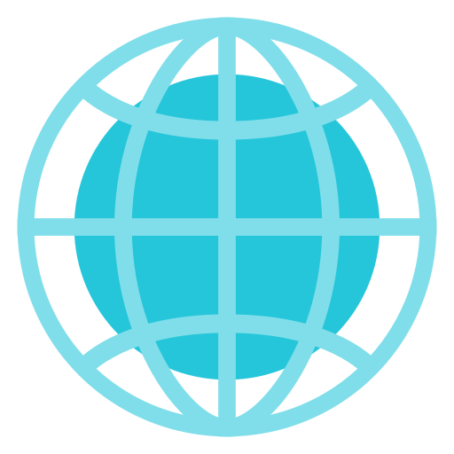
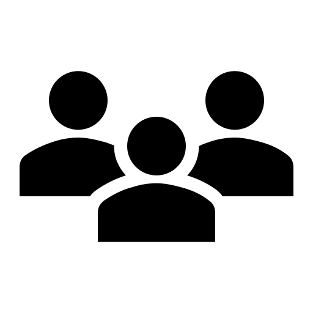
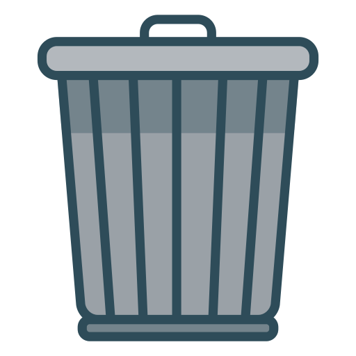
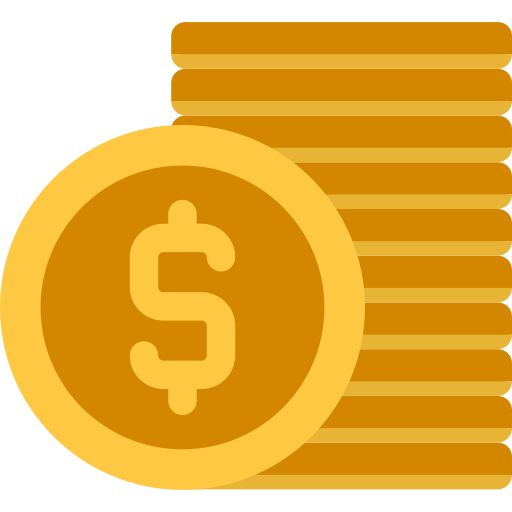

ODS 2
FOME ZERO E AGRICULTURA SUSTENTÁVEL
Nosso Manifesto: Tecnologia a serviço de quem precisa
Acreditamos que o acesso à alimentação é um direito humano fundamental, não um privilégio. Em um mundo onde a abundância convive diariamente com a escassez, a ineficiência logística não pode ser uma desculpa para a fome.
Nossa missão é erradicar a insegurança alimentar conectando, em tempo real, os excedentes de alimentos de toda a cadeia produtiva às organizações que atendem quem mais precisa, de forma rápida, rastreável e inteligente.
Compromisso Agenda 2030 (ONU): O FoodMap foi estruturado para ser uma ferramenta direta de execução do Objetivo de Desenvolvimento Sustentável 2. Atuamos ativamente na meta 2.1, garantindo o acesso a alimentos seguros e nutritivos durante todo o ano, e na meta 12.3, operando na redução sistemática do desperdício global de alimentos nas fases de varejo e consumo.
O Tamanho do Desafio
Métricas que guiam nossa atuação estratégica e avaliação de impacto socioambiental.

55M+
pessoas em situação de insegurança alimentar grave no Brasil.

40%
de todos os alimentos produzidos são desperdiçados no país.
0
plataformas centralizadas para gestão eficiente de doações locais até nossa fundação.

R$61B
valor estimado do desperdício anual de alimentos no Brasil.
Dados de insegurança alimentar via IBGE (PNAD Contínua - Módulo Segurança Alimentar). Índices de desperdício e impacto financeiro baseados no PNUMA e FAO.
Transparência e Governança
A confiança é o pilar da nossa rede. Mantemos padrões rigorosos de governança corporativa, segurança da informação e auditoria para garantir que cada doação chegue ao seu destino final com total conformidade.
Conexão Direta
Facilitamos a ponte entre quem quer doar e quem precisa. O processo é simples, direto e você acompanha o status da sua doação pelo próprio aplicativo.
Privacidade e Cuidado
Levamos a sério as suas informações. Coletamos apenas os dados essenciais para o funcionamento da plataforma e nos comprometemos a não compartilhar suas informações pessoais com terceiros.
Foco no Impacto Social
Nosso maior objetivo é reduzir o desperdício de alimentos e combater a fome. Crescemos com base no feedback da comunidade e na transparência das nossas ações.
"Alimentos existem. Pessoas precisam. O FoodMap une os dois."